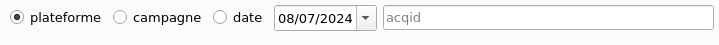

L'interface graphique
Le mode de navigation

Aito permet de naviguer dans les données par différents modes :
mode plateforme
-
la liste arborescence affiche :
plateformes -> années -> numéro d'acquisitions.
-
la liste détail affiche :
plateformes -> années -> numéro d'acquisitions -> vecteurs.
mode campagne
-
la liste arborescence affiche :
campagnes -> plateformes -> années -> numéro d'acquisitions.
-
la liste détail affiche :
campagnes -> plateformes -> années -> numéro d'acquisitions -> vecteurs.
mode date
Après avoir sélectionné une date grâce au calendrier :
-
la liste arborescence affiche :
année -> mois -> jour -> acqids.
-
la liste détail affiche :
acqids -> vecteurs.
note : si aucune acquisition n'est trouvée pour la date sélectionnée, un
message est affiché et l'arborescence affichée est celle "au plus près"
de la date donnée.
mode acqid
Après avoir saisi un acqid valide dans la boite prévue à cet effet, le mode
d'affichage passe en mode plateforme